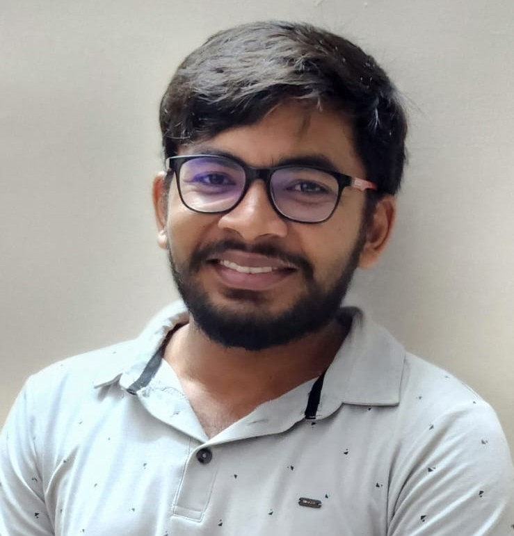

About Me

Welcome to my academic homepage. I am a theoretical physicist and currently a Postdoctoral Researcher in the Department of Inorganic Chemistry, Faculty of Natural Sciences, Comenius University Bratislava, Slovakia. I completed my Ph.D. in Physics at the Department of Physics, Institute of Science, Banaras Hindu University (BHU), Varanasi, India, in July 2025.
My doctoral research focused on quantum optics, quantum interferometry, and precision measurement using nonclassical states of light. I investigated strategies for improving phase estimation in Mach–Zehnder and SU(1,1) interferometers, including schemes involving squeezed Kerr states, Schrödinger cat-like states, and alternative detection strategies.
This work explored how quantum resources and measurement design can improve phase sensitivity, including regimes in which photon loss and practical measurement constraints become important.
Current direction: My postdoctoral research extends towards theoretical spectroscopy and light–matter interactions, including relativistic time-dependent density functional theory, X-ray spectroscopy, and light carrying orbital angular momentum.
Current Research Activities
My current research focuses on the theoretical description of light–matter interactions and spectroscopy, with an emphasis on developing more rigorous models for understanding experimental observations.
- Relativistic time-dependent density functional theory: Exploring relativistic electronic-response methods under the dipole approximation.
- X-ray spectroscopy: Investigating the theoretical description of spectroscopic processes in atoms and small molecules.
- Orbital angular momentum of light: Exploring light–matter interactions involving structured light and its orbital angular momentum.
- Quantum spectroscopy: Drawing on my background in quantum optics to investigate nonclassical light and precision measurement.
Broader Research Interests
- Quantum optics and quantum interferometry, including SU(2) and SU(1,1) interferometers.
- Quantum sensing and metrology using nonclassical states of light.
- Quantum estimation theory, quantum Fisher information, and phase sensitivity.
- Two-photon absorption and nonlinear quantum measurement.
- Weak-value amplification and precision measurement.
- Quantum plasmonic sensing and surface plasmon resonance.
- Orbital angular momentum of light and photonic quantum technologies.
Collaborative Research Experience
Max Planck Institute for the Science of Light
Erlangen, Germany | 2019 and 2022
I visited the research group of Prof. Maria Chekhova, where I gained exposure to experimental quantum optics. This experience helped me connect theoretical questions with experimental considerations and develop a more practical perspective on quantum-light research.
University of Hamburg
Hamburg, Germany | August 2023 – January 2024
I worked with Dr. Frank Schlawin on theoretical aspects of quantum light–matter interactions and quantum spectroscopy. This collaboration strengthened my interest in rigorous theoretical modelling and the relationship between quantum optical phenomena and spectroscopic observables.
Education
Ph.D. in Physics
2019–2025 | Banaras Hindu University, Varanasi, India
Research area: Quantum interferometric sensing and two-photon absorption estimation with nonclassical states and measurements.
M.Sc. in Physics
2016–2018 | University of Allahabad, India
B.Sc. in Physics and Mathematics
2013–2016 | TDPG College, VBS Purvanchal University, India
Selected Publications
Selected publications and preprints from my research in quantum optics, interferometry, and nonlinear quantum measurement.
| Title | Journal / Source | Year | Article |
|---|---|---|---|
| Enhanced weak-value amplification with Schrödinger cat-like states | Accepted in JOSA B | 2026 | Article |
|
Optimal squeezing for phase estimation in coherent state seeded SU(1,1) interferometer
Corresponding author |
Physics Letters A | 2026 | Article |
| Enhancing measurement precision of non-degenerate two-photon absorption | Quantum Science and Technology | 2026 | Article |
| Quantum-enhanced super-sensitivity of Mach-Zehnder interferometer using squeezed Kerr state | APL Quantum | 2024 | Article |
| Improvement in phase-sensitivity of a Mach-Zehnder interferometer with the superposition of Schrödinger’s cat-like state with vacuum state as an input under parity measurement | Optical and Quantum Electronics | 2023 | Article |
| Quantum-enhanced super-sensitivity of a Mach–Zehnder interferometer with superposition of Schrödinger’s cat-like state and Fock state as inputs using a two-channel detection | JOSA B | 2022 | Article |
| Broadening the high sensitivity range of squeezing-assisted interferometers by means of two-channel detection | Optics Express | 2021 | Full text |
For the complete publication record, please visit my Google Scholar profile .
Awards and Grants
- International Visiting Student Program (2023): Selected for six months of international research support under the Institutes of Eminence programme at BHU.
- Research Incentive Grant: Received the IoE, BHU research incentive grant twice, in August 2022 and April 2024, for publications in peer-reviewed journals.
- First Prize in Poster Competition: Awarded at the 7th Institute Day Celebration, Institute of Science, BHU, on 14 December 2022.
Curriculum Vitae
For further details about my academic background, research experience, publications, and professional activities, please consult my curriculum vitae.
Download CV (PDF)Contact
Please feel free to contact me regarding research, academic collaborations, and related enquiries.
- Email: gaurav.shukla95@zohomail.in
- Email: gaurav00jnp@gmail.com
- Previous: gaurav.shukla18@bhu.ac.in (BHU)
- Affiliation: Department of Inorganic Chemistry, Faculty of Natural Sciences, Comenius University Bratislava, Slovakia.